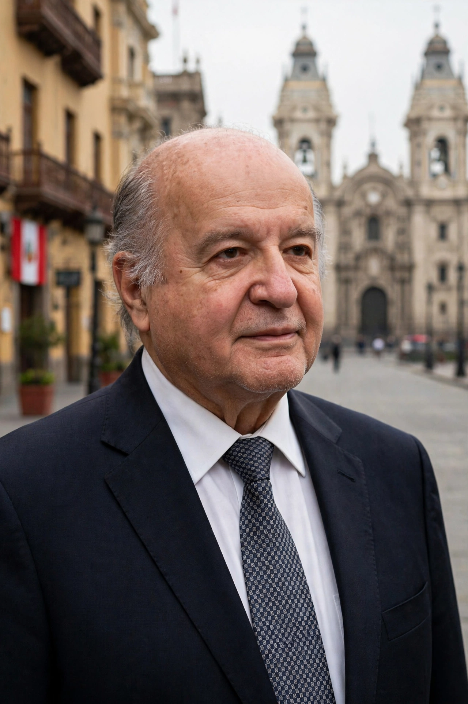

Hernando de Soto Polar (born 3 June 1941) is a Peruvian economist known for his work on the informal economy and the importance of property rights for economic development. He is the president of the Institute for Liberty and Democracy (ILD), a Lima-based think tank, and the author of The Other Path (1986) and The Mystery of Capital (2000). De Soto argues that the poor of the developing world hold enormous assets in "dead capital" — property held without formal legal title — and that integrating these assets into formal property systems is the key to unlocking prosperity.
| Hernando de Soto | |
|---|---|
 De Soto in Lima | |
| Born | 3 June 1941, Arequipa, Peru |
| Nationality | Peruvian |
| Field | Development economics, institutional economics |
| Institution | Institute for Liberty and Democracy |
| Notable works | The Other Path (1986); The Mystery of Capital (2000) |
| Political career | Candidate for President of Peru, 2021 |
De Soto was born in Arequipa, Peru. His father was a Peruvian diplomat, and after a military coup in 1948 the family went into exile in Europe, where de Soto was educated, including studies in social psychology and economics in Geneva. He worked as an economist for the General Agreement on Tariffs and Trade (GATT) in Geneva and in the private sector, heading a Swiss bank, before returning to Peru at the end of the 1970s. Not to be confused with the 16th-century Spanish conquistador Hernando de Soto, from whom he is sometimes said to borrow symbolic resonance as an "explorer" of the informal economy.
In 1980 de Soto founded the Institute for Liberty and Democracy in Lima. The ILD's research documented how ordinary Peruvians, blocked by labyrinthine bureaucracy, built housing, transport, and businesses outside the law. Its famous field experiments measured the cost of legality — for example, the hundreds of days and many bribes needed to register a small garment workshop. El otro sendero ("The Other Path", 1986, with Enrique Ghersi and Mario Ghibellini) argued that the poor were not the problem but the victims of a mercantilist system of red tape, and that the real alternative to the violence of the Shining Path was free markets and legal reform. The book became internationally influential, and de Soto advised the government of Alberto Fujimori on economic reforms in the early 1990s before breaking with it.
In The Mystery of Capital: Why Capitalism Triumphs in the West and Fails Everywhere Else (2000), de Soto argued that the poor in developing and former communist countries hold trillions of dollars in assets — houses, land, and businesses — but in defective forms: without registered title, they cannot be used as collateral, divided, or easily traded, so they remain "dead capital". Western prosperity, he argued, rested on formal property systems that represent assets in a shared legal language, enabling credit, investment, and impersonal exchange. The ILD promoted titling and business-formalization programs in countries including Peru, Egypt, Tanzania, and Haiti.
Critics argue that titling alone does not produce credit or growth, pointing to studies in which formalization raised investment and labor supply but showed limited effects on access to bank loans. Others fault de Soto for understating power relations, inequality, and the role of the state and institutions beyond property. His estimates of dead capital's value have also been questioned as overstated.
De Soto was a perennial figure in Peruvian politics and formally ran for President of Peru in the 2021 general election with the party Avanza País, placing in the first round but not advancing to the runoff. He has advised governments and international figures on property formalization and, more recently, promoted ideas applying his property-representation theories to issues such as preventing conflict over resources and empowering indigenous communities.
From Wikipedia, the free encyclopedia (recreated from memory).